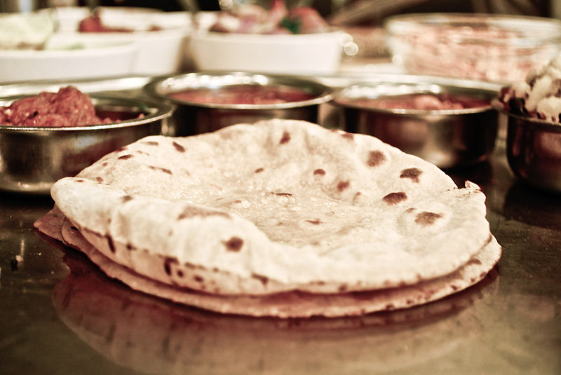

Chapathi

Chapathi, also spelled as chapati, is a type of unleavened flatbread originating from the Indian subcontinent.
It's made from whole wheat flour, water, and sometimes a bit of salt. The dough is rolled out into thin circles
and then cooked on a hot griddle or tawa until it's slightly puffed and golden brown. Chapathi is a staple in
Indian cuisine and is commonly served with a variety of dishes such as vegetables, curries, and lentils. It's
prized for its simplicity and versatility, and it's a fundamental part of many meals in the region.
Basic recipe for making chapathi:
Ingredients:
- 1 cup whole wheat flour
- 1/4 teaspoon salt (optional)
- 1/4 cup water (more as needed)
- 1 tablespoon oil or ghee (optional, for softer chapathis)
Instructions:
- the Dough:
- In a large bowl, combine the whole wheat flour and salt.
- Gradually add water, a little at a time, while mixing the flour with your fingers or a spoon.
- Once the dough starts to come together, knead it with your hands for about 5-7 minutes until it’s
smooth and elastic. If the dough feels too dry, add a bit more water. If it’s too sticky, add a
little more flour.
- Rest the Dough:
- Cover the dough with a damp cloth or plastic wrap and let it rest for at least 15-20 minutes. This
helps to make
the chapathis softer.
- Divide and Roll:
- After resting, divide the dough into small balls, about the size of a golf ball.
- On a lightly floured surface, take one dough ball and flatten it slightly with your fingers. Using a
rolling pin,
roll it out into a thin, round disc. Try to make it as even as possible, and use flour to prevent
sticking.
- Cook the Chapathi:
- Heat a griddle or non-stick skillet over medium-high heat.
- Place the rolled-out dough onto the hot griddle. Cook for about 30 seconds, or until you see
bubblesforming on the surface.
- Flip the chapathi and cook the other side for another 30 seconds. You can press gently with a cloth
or spatula to help it puff up.
- Flip again if needed, and cook until both sides have golden brown spots.
- Optional Step for Soft Chapathis
- If you like, you can brush the chapathi with a little oil or ghee while it’s still hot. This will keep it soft and add extra flavor.
- Serve:
- Serve the chapathis warm with your favorite curry, vegetable dish, or side.
Enjoy your chapathis!
<<Home